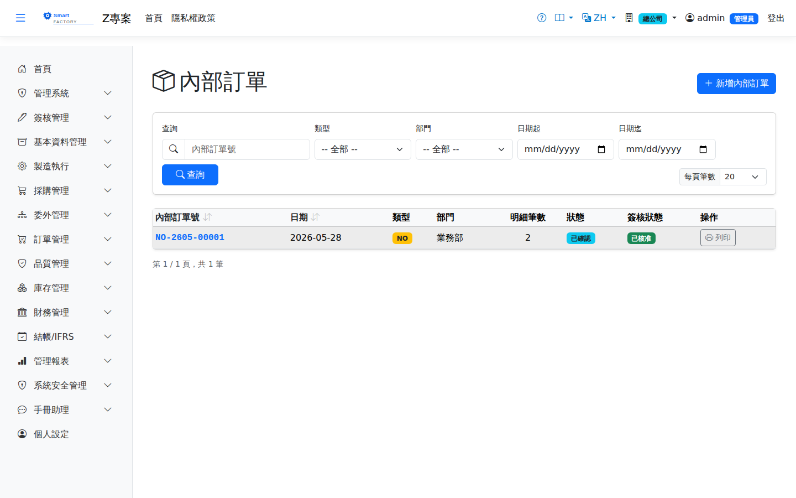

內部訂單Internal Order
路由：/InternalOrder | 廠內/關係企業內部需求單Route: /InternalOrder | Internal demand within the plant or between affiliates
非對外銷售的內部需求（樣品試作、廠間供貨等），與銷售訂單同樣驅動 MRP，訂單修改阻擋/警示規則與銷售訂單一致。Internal demand that is not an external sale (samples, trial runs, supply between plants). It drives MRP just like a sales order, and the same change-blocking and warning rules apply.

內部訂單畫面截圖（示意，實際欄位/資料依權限與查詢條件而異）Internal order screenshot (illustrative; actual fields and data vary by permission and query criteria)
查詢Search
1
查詢列輸入條件後點「查詢」；欄位標題可點擊排序，清單下方有分頁導航。Enter your criteria on the query bar and click "Search"; column headers can be clicked to sort, and the paging controls sit below the list.
單據狀態Status
| 狀態Status | 說明Guide |
|---|---|
| 草稿 DraftDraft | 已建立未生效，可自由編輯、刪除；需簽核者於此狀態送審。Created but not yet effective; can be freely edited or deleted, and submitted for approval from this status. |
| 待審核Pending approval | 已送審等待簽核，不可編輯；可撤回改回草稿。Submitted and waiting for approval; it cannot be edited, but it can be withdrawn back to draft. |
| 已確認 ConfirmedConfirmed | 簽核核准（或免簽核直接確認）後生效，等待後續作業/過帳。Effective once approved (or confirmed directly when no approval is required), waiting for the next step or for posting. |
| 已過帳 PostedPosted | 庫存/帳務已入帳，單據不可再修改。Stock and accounting have been posted; the document can no longer be changed. |
| 已作廢 VoidVoid | 反向沖銷已過帳內容；作廢原因需留存，不可復原。Reverses what was posted; the void reason is kept and the action cannot be undone. |
作業流程Process
建立內部訂單Creating an internal order
1
點「新增」開啟側欄，填寫內部訂單表頭與明細行後儲存（草稿）。Click "Add" to open the panel, fill in the internal order header and lines, then save (as a draft).
2
點「送審」進入簽核流程；核准後單據自動轉「已確認」。若免簽核，直接點「確認」。Click "Submit" to start the approval flow; the document turns to "Confirmed" once approved. Where no approval is required, click "Confirm" directly.
後續作業Follow-up actions
1
已確認/已過帳單據可點「列印」產生含 QR Code 的正式表單（新分頁開啟）。Confirmed and posted documents can be printed with "Print", producing the official form with a QR code in a new tab.
2
已過帳單據如需沖銷，點「作廢」並填寫原因；系統產生反向庫存/帳務異動。To reverse a posted document, click "Void" and enter a reason; the system creates the reversing stock and accounting entries.
退料（NR）是沖銷領用（NO），兩者入帳在同一個科目「內部領用費用」（5260）：領用借記、退料貸回，全數退回後該科目歸零，不會碰到「進貨暫估應付」。退料以退回當下的單位成本入庫。A return (NR) reverses an issue (NO), and both post to the same account, internal use expense (5260): the issue debits it and the return credits it back, so a full return leaves that account at zero and never touches goods-received-not-invoiced. Returned stock comes back at the unit cost at the time of the return.
欄位說明Field reference
表頭Header
| 欄位Field | 說明Guide |
|---|---|
| 內部訂單號Internal Order No. | 系統採番，不可修改Numbered by the system; not editable |
| 訂單日期Order Date | 必填Required 需求提出日期Date the demand was raised |
| 類型Type | 必填Required 內部領用的性質（如領用 NR／退回等），決定庫存異動方向為出庫或入庫Nature of the internal issue (a non-returnable issue, a return and so on), which decides whether stock moves out or in |
| 部門Department | 必填Required 提出需求的部門，費用歸屬依此認列；查詢清單與列印顯示部門名稱Department raising the demand; the cost is charged to it. The list and printout show the department name |
| 備註Notes | 整張內部訂單的補充說明Notes for the whole internal order |
明細Lines
| 欄位Field | 說明Guide |
|---|---|
| 品號Item | 必填Required 領用或退回的料件Item issued or returned |
| 需求日期Required Date | 必填Required 該行希望取得的日期Date this line is wanted |
| 數量 / 單位Qty / UOM | 必填Required 領用或退回的數量與計量單位。選了品號後，單位只列該品號的庫存單位與查得到換算的單位（預設庫存單位）；存檔時系統依品號主檔換算成庫存數量入帳，查不到換算的單位會擋下並說明。Quantity and unit of measure issued or returned. Once a product is chosen, the unit list shows only its stock unit and the units that convert to it (stock unit preselected); on save the system converts to the stock quantity from the product master, and a unit with no conversion is rejected with an explanation. |
| 已上架量 / 已下架量Put-Away Qty / Picked Qty | 倉庫作業實際執行的累計數量；欄名依類型為入庫或出庫而變動Cumulative quantity actually processed by warehouse operations; the column name changes with the direction (in or out) |
| 結案Close | 勾選後該行不再等待倉庫作業，未執行完的餘量不再追蹤Once checked, the line no longer waits for warehouse operations and any remaining quantity is no longer tracked |
| 備註Notes | 該明細行的個別說明Notes for this individual line |